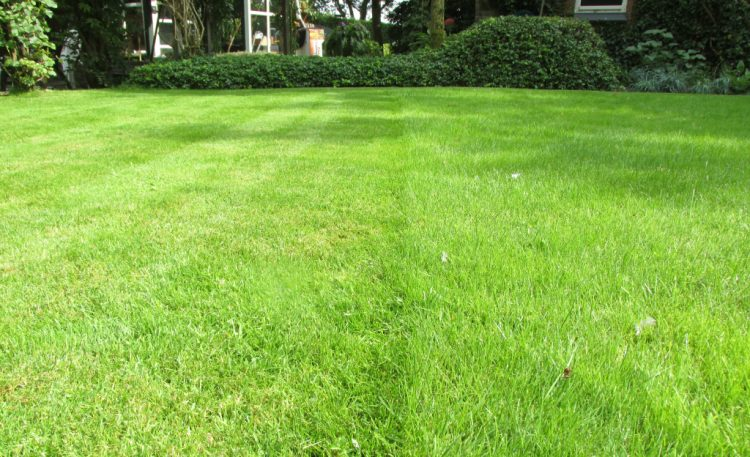

Maak bruin gras weer groen
Pak een emmer en stop hier ongeveer 2 kopjes tafelzout dieetzout, 1 kop suikerstroop, een halve kopje mondwater en een kopje afwasmiddel. De rest van vul je aan met water. Verspreid dit elke 3 weken op je gazon en zie het gras groener worden. Het is handig om ecologische afwasmiddel te gebruiken.
